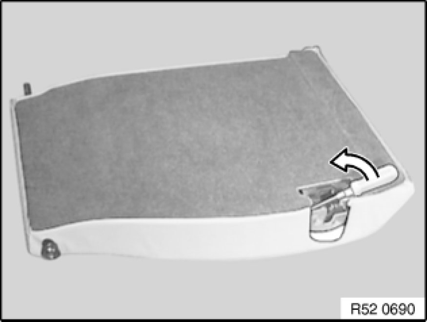
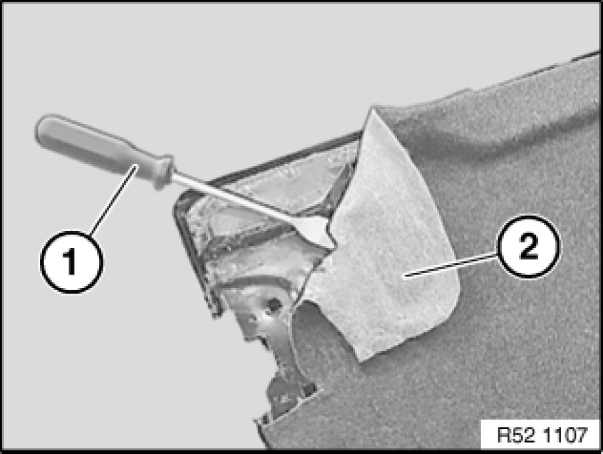

Removing and Installing/Replacing Rear Panel on Left Rear Seat Backrest
52 26 199 - Removing and installing/replacing rear panel on left rear seat backrest

Necessary preliminary tasks:
- Remove backrest for rear seat Removing and Installing/Replacing Both Backrests For Rear Seat
- Remove cover strip Removing and Installing Complete Centre Armrest for Rear Seat Backrest (Through-Loading) or
Remove ski bag Removing and Installing/Replacing Ski Bag With Casing on Rear Seat (Through-Loading System)

Lever backrest cover all round out of backrest frame.

Detach rear panel (2) with flat scraper (1) from rear seat backrest.
Installation:
Comply with instructions issued by manufacturer of universal spray adhesive.
Apply universal spray adhesive to rear panel and rear seat backrest.
Fit and align rear panel within the air drying time (see manufacturer's instructions).
Observe and adhere to curing time to prevent rear panels from slipping.